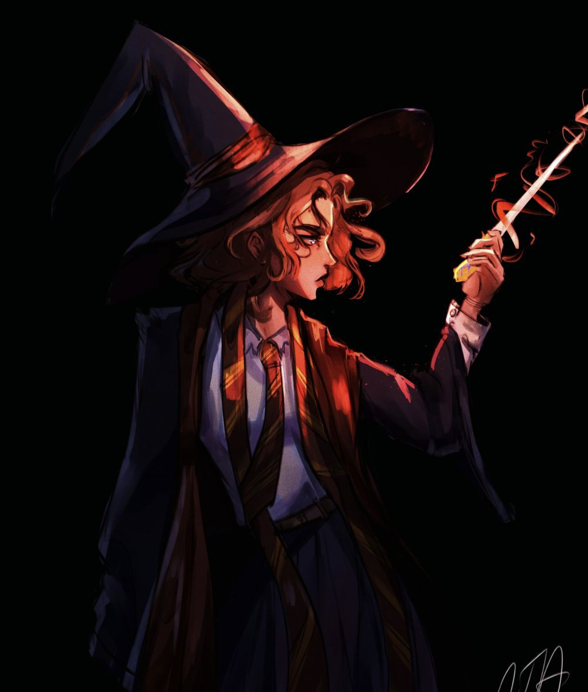

Woes of an artist
October 2, 2024 by Dana
One thing that really gets to me sometimes is how little time I have to draw during school. Where I used to make nearly 20 sketches a day, maybe even 2 full pieces a week, now I'm lucky if I even draw once a month. I just wish I had more time, but such is the life of a Com Sci student.
I miss the flow of creativity that used to come so easily, the way I could lose myself in my art for hours on end. It’s frustrating to juggle assignments and projects, knowing that my sketchbook is gathering dust while my ideas keep piling up. Sometimes, I find myself doodling in the margins of my notes during lectures, just to keep that spark alive.
I know that this phase is temporary, and once I find my rhythm, I’ll be able to carve out some time for my passion again. Still, I can't help but feel a bit disconnected from the joy of creating. Art was my escape, my way of expressing myself, and I’m determined to reconnect with that part of me. Maybe I can set aside just a few minutes each day to sketch, even if it’s just for fun. After all, every little bit helps keep the creative flame burning, right?